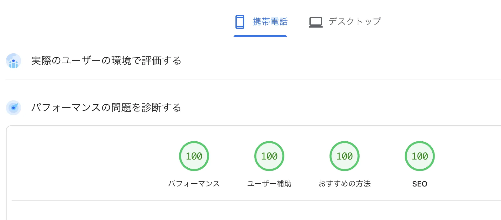

PageSpeed Insightsでパフォーマンス・ユーザー補助・おすすめの方法・SEOの4項目すべてを100点にするのは、運任せではなく再現可能な技術です。 この記事は、当サイト（leciel-webdesign.com）のトップページを実際にモバイル全項目100点にしたときの構成をもとに、画像・フォント・JavaScript・サーバー設定まで、そのまま真似できる手順を公開します。

そもそもPageSpeed Insightsの「4項目」とは
PageSpeed Insights（Lighthouse）は、ページを4つの観点で0〜100点で採点します。
- パフォーマンス：表示速度・体感速度。最も難しく、最も差が出る
- ユーザー補助（Accessibility）：色のコントラスト、代替テキスト、ラベルなど
- おすすめの方法（Best Practices）：HTTPS、コンソールエラー、画像の縦横比など
- SEO：メタ情報、モバイル対応、クロール可否など
大前提：モバイルで採点する
モバイル計測は低速回線・非力なCPUを想定して厳しく採点されます。モバイルで100点なら、PCはほぼ自動的に100点です。最初からモバイル基準で最適化しましょう。
正しい測り方：Lighthouseでモバイル＆PC両方を測る
改善の前に「正しく測る」ことが重要です。ここを外すと“直したつもり”で終わります。
公開版のPageSpeed Insightsだけに頼らない
Web版のPageSpeed Insightsは手軽ですが、共有の利用枠の制限ですぐ計測できなくなることがあります。本格的に追い込むなら、同じエンジンであるLighthouse のコマンド版（CLI）をローカルに入れて測るのが確実です。100点未満のときは、点数の内訳（個別の監査項目）を見れば原因が具体的に分かります。
Lighthouse CLI でモバイルを測る
lighthouse "https://example.com/" \
--only-categories=performance,accessibility,best-practices,seo \
--form-factor=mobile --screenEmulation.mobile \
--output=html --output-path=/tmp/lh-mobile.htmlモバイルとPC、両方で100点を目指す
スコアはモバイルとデスクトップで別々に出ます。「全項目100点」とは、モバイル4項目＋デスクトップ4項目の計8スコアすべてが100という意味です。厳しいモバイルを基準に作れば、デスクトップ（--preset=desktopで計測）はほぼ自動的に100になります。
ローカル簡易サーバーの数値は鵜呑みにしない
python3 -m http.serverのような簡易サーバーは圧縮もキャッシュも返さないため、本番より低く出ます。最終確認は必ず本番URL（圧縮・キャッシュが効く状態）で測り直しましょう。修正直後はPageSpeed側のキャッシュが古いことがあるので、数分待ってから再テストします（目安：LCP 2.5秒以内・CLS 0.1未満）。
パフォーマンス100点の核心：Core Web Vitals
パフォーマンス点は主に次の指標で決まります。意味を押さえると、何を直せばいいかが見えてきます。
| 指標 | 意味 | 主な対策 |
|---|---|---|
| LCP | 主役の画像・見出しが表示されるまで | 画像最適化・preload・フォント非依存 |
| CLS | 表示中のガタつき（レイアウトずれ） | 画像に幅高さ指定・aspect-ratio |
| TBT / INP | 操作に反応するまでの待ち時間 | JSを減らす・遅延読み込み |
| FCP / SI | 最初の描画・全体の表示速度 | CSSインライン化・圧縮・キャッシュ |
ポイントは「最初の画面に必要なものだけを最速で出し、それ以外は後回しにする」こと。以下、具体的に何をやったかを順番に解説します。
①画像を制す（最大の得点源）
ほとんどのサイトで、表示を遅くしている最大の犯人は画像です。ここを正すだけで点数は劇的に上がります。
次世代フォーマット（WebP / AVIF）に変換する
JPEG・PNGはWebPへ変換するだけで、画質を保ったまま容量を3〜7割削減できます。当サイトでは全画像を自前でWebP化しています。
macOS / Linux でまとめてWebP変換（cwebp）
# 通常の画像（高圧縮）
cwebp -q 78 -m 6 -sharp_yuv hero.jpg -o hero.webp主役（LCP）画像だけは品質優先で-q 64〜68程度に。下げすぎて主役画像がボケるとLCPの印象が悪くなり本末転倒です。また再圧縮を何度も繰り返すと劣化が累積するので、元画像から1回だけ変換します。
表示サイズに合わせて縮小する（過剰な解像度を配信しない）
「表示は600px幅なのに4000px幅の画像を配信」が典型的な失点。スマホ100点を狙うなら、実際の表示幅を少し上回る780px前後を目安に縮小すると、画質と容量のバランスが取れます。
すべての画像に width / height を指定する（CLS対策）
サイズ未指定だと、画像読み込み時にレイアウトがガタつき（CLS悪化）ます。widthheightまたはaspect-ratioで表示枠を先に確保します。
<img src="hero.webp" width="1200" height="675" alt="店内の様子">LCP画像はpreload、それ以外はlazyに
ファーストビューの主役画像（LCP画像）はpreloadとfetchpriority="high"で最優先に。逆に画面外の画像はloading="lazy"＋decoding="async"で後回しにし、初期表示の帯域をLCPに譲ります。主役画像をlazyにするのは厳禁（かえってLCPが遅くなり減点されます）。
<!-- 主役画像は先読み（LCP短縮）。lazyにしない -->
<link rel="preload" as="image" href="hero.webp" fetchpriority="high">
<img src="hero.webp" width="1200" height="675" fetchpriority="high" decoding="async" alt="店内の様子">
<!-- 画面外の画像は遅延 -->
<img src="staff.webp" loading="lazy" decoding="async" width="800" height="600" alt="スタッフ">②フォントの罠：日本語Webフォントは捨てる
ここが最大のハマりどころです。Google FontsのNoto Sans JPのような日本語Webフォントは数MB級で重く、LCPの足を引っ張ります（PageSpeedの計測環境ではこれが律速になり、どれだけ画像を最適化しても100点に届かないことがあります）。
解決策はシンプルで、Webフォントの読み込みをやめ、OS標準の日本語フォントスタックを使うこと。これでフォント由来の読み込みがゼロになり、即描画＝LCP最速になります。当サイトもこの方式です。
OS標準フォントスタック（Webフォント読込ゼロ）
body {
font-family:
-apple-system, BlinkMacSystemFont,
"Hiragino Sans", "Hiragino Kaku Gothic ProN",
"Noto Sans JP", "Yu Gothic", YuGothic, Meiryo, sans-serif;
}なぜWebフォントだけで100点が崩れるのか
Lighthouseのシミュレーションは、font-display: swapにしていても主役テキスト（LCP）が使うWebフォントのダウンロードを「表示の律速」として扱います。日本語フォントは1ファミリで2〜3MB級になるため、実際の表示は速くてもスコア上は何秒もかかった判定になり、100点が安定しません。
ブランド書体をどうしても使いたいなら「初回操作時に読み込む」
意匠上どうしても特定のフォントが必要な場合の決定版は、ページ表示時には読み込まず、ユーザーの最初の操作（スクロール・タップなど）が起きてから読み込む方法です。Lighthouseは操作しないので計測中はシステムフォントで描画＝100点。実ユーザーには初回スクロール等で本来の書体へ即差し替わるので、見た目はほぼ変わりません。
<noscript><link rel="stylesheet" href="https://fonts.googleapis.com/css2?family=...&display=swap"></noscript>
<script>(function(){var done=false;function load(){if(done)return;done=true;
var l=document.createElement('link');l.rel='stylesheet';
l.href='https://fonts.googleapis.com/css2?family=...&display=swap';
document.head.appendChild(l);}
['scroll','pointerdown','touchstart','keydown','wheel','click']
.forEach(function(e){window.addEventListener(e,load,{once:true,passive:true});});
})();</script>前提として、CSSのフォント指定の末尾に必ずシステムフォントを置くこと（読み込み前はそれで表示されます）。さらに堅くするなら、使う文字だけを抜き出したサブセットwoff2を自前ホストします。
判断基準
全項目100点が絶対要件なら、OS標準フォントスタックが最短かつ確実。ブランド書体が必須のときだけ、上記の「操作時読み込み」を使う——と切り分けるのがおすすめです。
③JavaScriptとサードパーティを遅らせる
計測タグ（Googleアナリティクスなど）や広告・チャットなどの外部スクリプトは、TBT・INPを悪化させる代表格です。計測は維持しつつ、初期表示を妨げないよう「最初の操作まで読み込みを遅らせる」のが有効です。
当サイトのGA4（gtag）はこの方式。スクロールやタップなど最初の操作が起きてから読み込むため、初期描画を一切邪魔しません。
gtag.js を最初の操作まで遅延ロードする実装
<script>
window.dataLayer = window.dataLayer || [];
function gtag(){dataLayer.push(arguments);}
gtag('js', new Date());
gtag('config', 'G-XXXXXXX');
(function(){
function loadGtag(){
if (window.__gtagLoaded) return; window.__gtagLoaded = true;
var s = document.createElement('script');
s.async = true;
s.src = 'https://www.googletagmanager.com/gtag/js?id=G-XXXXXXX';
document.head.appendChild(s);
}
['scroll','click','keydown','touchstart','pointerdown'].forEach(function(ev){
window.addEventListener(ev, loadGtag, { once:true, passive:true });
});
})();
</script>「数秒後に読み込む」タイマー方式はNG
「読み込み後◯秒で実行」のような短いタイマーは、Lighthouseの計測時間内に発火してスクリプトがダウンロードされ、結局減点に戻ります。スクロール・タップなどの操作をきっかけにするのが確実です（Lighthouseは操作しないため計測中は一切読み込まれません）。一度も操作せず離脱する人の計測を取りこぼしたくない場合のみ、十分長い（4秒以上の）フォールバックを併用します。
そのほか、使っていないJS・jQuery・重いスライダーは思い切って削除。CSSアニメーションやネイティブ機能で代替できることは多いです。
④サーバー設定（.htaccess）で底上げ
配信側の設定も得点に効きます。Apache（ロリポップ等）なら.htaccessで圧縮（Brotli/gzip）と長期キャッシュを有効化します。実際に当サイトで使っている設定がこちらです。
.htaccess（圧縮 + キャッシュ）
# ---- 圧縮 ----
<IfModule mod_brotli.c>
AddOutputFilterByType BROTLI_COMPRESS text/html text/css text/javascript application/javascript application/json image/svg+xml font/woff2
</IfModule>
<IfModule mod_deflate.c>
AddOutputFilterByType DEFLATE text/html text/css text/javascript application/javascript application/json image/svg+xml
</IfModule>
# ---- キャッシュ（静的資産は1年・HTMLは常に最新） ----
<IfModule mod_headers.c>
<FilesMatch "\.(woff2|webp|svg|png|jpe?g|ico|css|js)$">
Header set Cache-Control "public, max-age=31536000, immutable"
</FilesMatch>
<FilesMatch "\.html$">
Header set Cache-Control "no-cache, must-revalidate"
</FilesMatch>
</IfModule>あわせてHTTPS化（常時SSL）は必須。これは「おすすめの方法」スコアの前提でもあります。
未使用CSSの削減は“やりすぎない”
「未使用CSSの削減」「CSSの最小化」も加点要素ですが、インラインの大きな<style>を手で削ると表示崩れのリスクが高いです。画像・フォント・サーバー設定で既にパフォーマンスが100点なら、無理に触らないのも正しい判断です。
ユーザー補助・おすすめの方法・SEOを100点にする
87点前後で止まる原因はほぼ決まっています。どれも確実に直せます。
- <main>ランドマークを置く：本文全体を
<main>で囲む（landmark-one-mainの定番減点。</header>の直後に開き、<footer>の直前で閉じる） - 見出しレベルを飛ばさない：
h1→h2→h3と連番に（heading-order。h2の次にh4はNG。見た目を変えずタグだけ直し、CSSがタグ名で当たっていればセレクタも一緒に直す） - 色のコントラスト比を確保（本文4.5:1以上）。薄いグレー文字は失点しがち
- すべての
imgに内容を表すaltを付ける - フォームの入力欄は
<label for>で必ずラベルを紐付ける（placeholderはラベルの代わりになりません）。アイコンだけのボタンはaria-label - テキストの無いリンク・ボタンを作らない（
link-name/button-name） <html lang="ja">を指定
実体験の落とし穴：mix-blend-mode
ヘッダー全体にmix-blend-mode: differenceを掛けると、ボタンの色まで反転してコントラスト判定に落ちることがあります。テキスト要素だけに適用するのが安全です。
おすすめの方法（Best Practices）
- HTTPSで配信し、混在コンテンツ（http://）を残さない
- ブラウザのコンソールにエラーを出さない（原因は
network-requestsでステータス400以上を探すと特定できる） - favicon.icoの404はコンソールエラーの定番。
<head>に<link rel="icon">を明示すると、ブラウザが/favicon.icoを取りに行かなくなりエラーが消える - 画像は正しい縦横比（width/heightと実比率を一致）で表示
リクエストを増やさずfaviconを宣言（インラインSVG・404も同時に解消）
<link rel="icon" href="data:image/svg+xml,%3Csvg xmlns='http://www.w3.org/2000/svg' viewBox='0 0 100 100'%3E%3Crect width='100' height='100' rx='20' fill='%232563eb'/%3E%3C/svg%3E">SEO
titleとmeta name="description"を各ページ固有に設定- モバイルで読めるフォントサイズ・タップ領域（モバイルフレンドリー）
robots.txtでブロックしない、canonicalを指定- 構造化データ（JSON-LD）を入れるとリッチリザルトにも有利
100点チェックリスト
- 画像はすべてWebP化し、表示サイズに合わせて縮小した
- すべての画像に width / height（または aspect-ratio）を指定した
- 主役画像は preload＋fetchpriority、画面外は loading="lazy"＋decoding="async"（主役はlazyにしない）
- 日本語Webフォントをやめ、OS標準フォントスタックにした（残す場合は初回操作で読み込み）
- 計測タグ・外部スクリプトを初回操作まで遅延ロードした
- 未使用のJS / プラグインを削除した
- .htaccessで圧縮（Brotli/gzip）と長期キャッシュを有効化した
- HTTPS化し、コンソールエラーをゼロにした（faviconは <link rel="icon"> で明示）
- <main>ランドマークを置き、見出しレベルを飛ばさず連番にした
- 本文コントラスト4.5:1以上・全画像にalt・フォーム入力にlabelを付けた
- title / description / canonical / 構造化データを設定した
- 本番URLでモバイル・デスクトップ両方を測り、計8スコア100を確認した
「速くて100点」のホームページを、5万円〜で。
当サイトと同じく、スマホ最適化・表示速度・SEOまで作り込んだサイトを制作します。
今のサイトの速度診断だけでも無料でお受けします。全国オンライン対応。
しつこい営業は一切いたしません
よくある質問
スコアが直接順位を決めるわけではありませんが、Core Web Vitalsはランキング要因の一つです。速く快適なサイトは離脱が減り、評価やコンバージョンの向上につながります。100点は目的ではなく「快適なサイトの結果」と捉えるのが正解です。
可能ですが、テーマ・プラグインが多いほど難易度は上がります。不要なプラグインを削り、画像最適化・キャッシュ・遅延読み込みを徹底すれば高得点は狙えます。静的HTMLに比べJavaScriptの肥大化に注意が必要です。
モバイル計測は低速回線・非力なCPUを想定して厳しく採点されます。モバイルの方が下がりやすいため、100点を狙うならモバイル基準で最適化するのが鉄則です。
まとめ
PageSpeed Insightsの全項目100点は、特別な裏技ではなく「正しく測る → 画像の最適化 → 日本語Webフォントを使わない → JSを遅らせる → サーバー設定で底上げ → 正しいHTML構造（<main>・見出し階層）」という地道な積み重ねで再現できます。後から最適化するより、最初から100点が取れる設計で作るのが結局いちばん早いです。 とくに日本語サイトではフォントの扱いが勝負どころ。ここを誤ると、どれだけ画像を頑張っても100点には届きません。
速いサイトは、訪問者にとって快適なだけでなく、離脱を減らし集客の底上げにも直結します。制作の費用相場とあわせて検討してみてください。 「自社サイトを速くしたい」「最初から100点のサイトを作りたい」方は、お気軽にご相談ください。